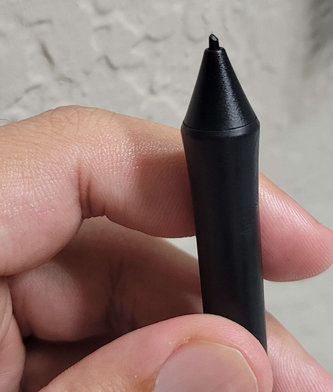
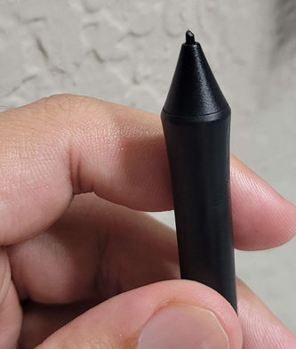

Second Picture
Learnt Lessons
Welcome back! Been working to push through to finish this on time. It ended up being more complicated than I thought it was going to be at first. Coloring sure is hard. Actually, I broke the tip of the pen from how hard I was pressing, whoops! Thankfully the pen comes with more, if I start to damage it more but I'll be more careful next time! Here's how it looks lol.
 

I'll mess with pressure sensitivity within Krita to hopefully not repeat this again! But enough about me, what about the picture? I finished this afternoon (10/14) but had to go into work so I couldn't actually finish making this entry.
What You Came to See

I know the fire is less than desirable, but I didn't have much time left and I want to stick to my schedule! Outside of that, I think the coloring turned out decent for the most part. Adding water colors on top of each other makes it darker than I thought, so I had to work around that. But I really like water coloring in Krita, makes shading pretty easy vs flat colors.
The left hand probably could have been fixed a bit more, but oh well. The art is based on my Phantasy Star Online character casting Gifoie, which is an aoe fire spell that spins around the user in a circle. I based the art on the card of the same name from Episode 3.
What's Next?
I'll continue to use water coloring in my pictures going forward I think, I like the effect a lot, very nostalgic in a way. As for what's next, I'm gonna work on a smaller project. My wrist has been hurting a bit, haven't taken care of my hands during this drawing process - and it shows.
I'll be making Twitch emotes for my channel, as I got affiliate a while ago, but I still only have the default emotes! It's a smaller size project - I know, but I think that it's gonna be good while I focus on my wrist. That's all there is for me tonight! See you guys next week.